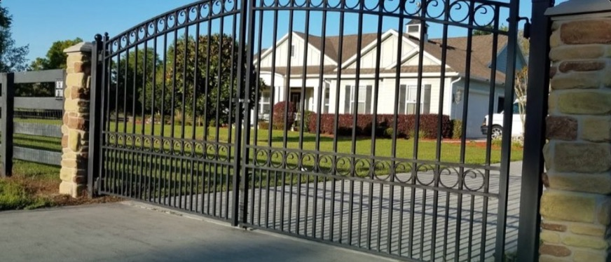
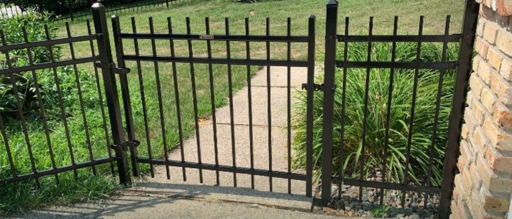
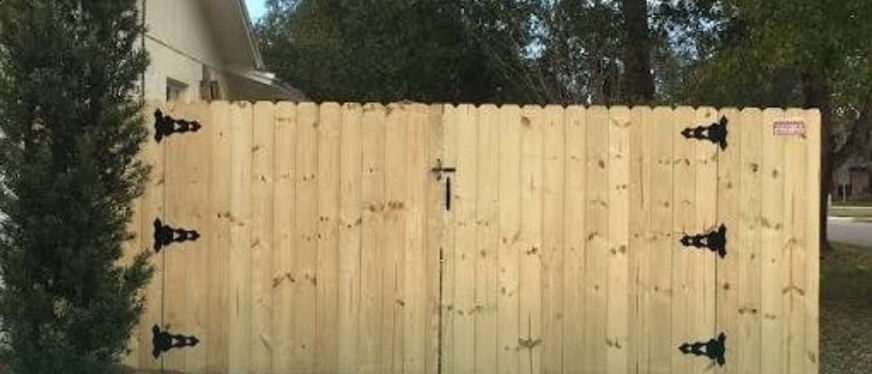
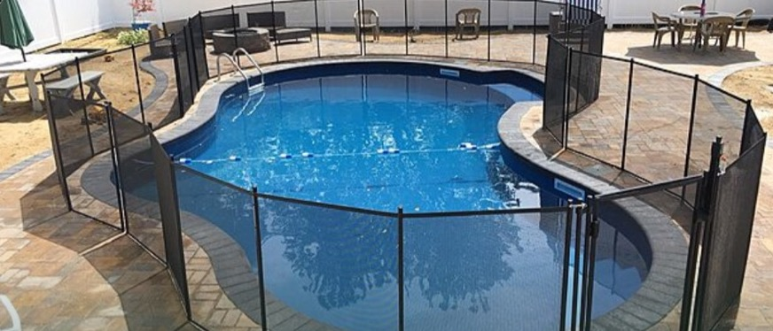
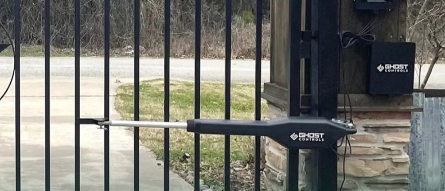
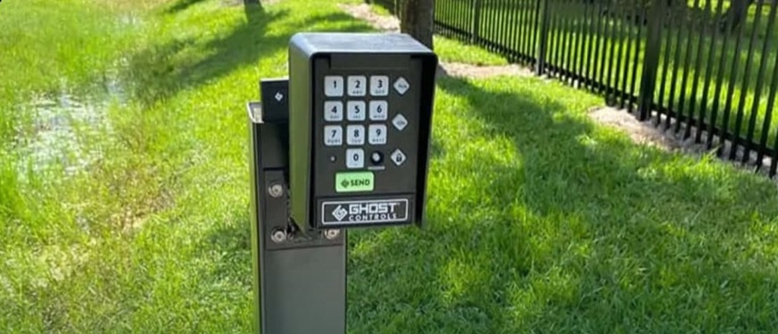

From a cedar walk gate that matches your fence line to a fully automated 20-foot estate entrance, every gate we build is welded, hung, and adjusted by our own crews — hinges, latches, and hardware included.

Our estate entrances are fabricated from welded ornamental steel and hung to swing true for years — sized for openings up to 20 feet and designed to pair beautifully with stone or masonry columns.
Cedar, vinyl, steel, chain link, and pipe — built with X-bracing and anti-sag hardware, and always delivered with hinges, latch, and hardware included.

Single walk gates in cedar, vinyl, steel, or chain link — framed to resist sag and hung to close cleanly, with hinges, latch, and hardware included.

Double drive gates for openings up to 20 feet — X-braced with anti-sag hardware and drop rods so both leaves stay square under daily use.

Built to match your cedar fence line — same pickets, same stain, same cap and trim — so the gate disappears into the fence until it opens.

Pipe gates from 8 to 20 feet and heavy-duty bull gates for livestock — welded steel hung on braced posts for acreage and working land.

Walk and drive gates that match your vinyl fence — reinforced frames, manufacturer-warrantied materials, and never a drop of stain needed.

Self-closing, self-latching gates built to pool code — so the gate secures itself behind every swimmer, every time.
Automatic openers, coded entry, and the hardware that keeps a heavy gate swinging true — installed and tuned by our own crews.

Motorized openers for drive gates — pull up, press a button, and roll through. We install, wire, and tune the system to your gate's weight and swing.

Coded keypads and handheld remotes control who comes and goes — share a code with family and guests, and change it whenever you like.
A gate is only as good as what it hangs on. Every Prestige gate can be upgraded with the hardware that keeps it square, secure, and easy to use for years.
Sized to the gate's weight so it swings smoothly and never drags.
Lockable latches that keep side yards and equipment areas secure.
Quiet, positive closure that catches every time the gate swings shut.
Support for wide leaves so long gates stay level season after season.
Pin one leaf of a double gate in place for a solid, rattle-free close.
A pool should be the best part of the backyard — never a worry. We build code-compliant pool enclosures with gates that close and latch themselves behind every swimmer.
Tell us about your opening and we'll walk the site, talk options, and deliver a clear quote — no pressure, no obligation.